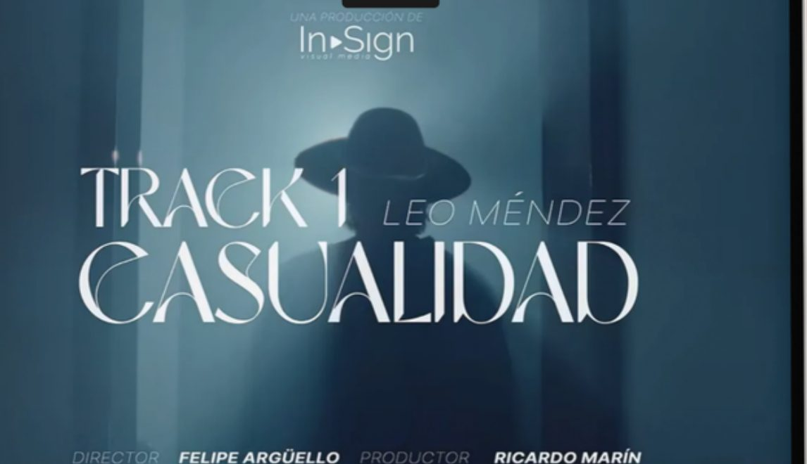

Todo el archivo
Marcas, piezas, contenidos y sets: cada mundo se muestra en su propia área de trabajo.
En lo gráfico.
Identidades construidas desde el primer trazo hasta los manuales: llevar la marca de la idea a la realidad. Pasa el cursor por las capas para ver de qué está hecha cada marca.
Mesas de trabajo
Capas
- Logotipo
- Paleta de color
- Tipografía
- Aplicaciones
Lo análogo.
Diseños pensados para el impreso: márgenes, tamaños y colores listos para salir de la pantalla.
En digital.
Contenido que enseña y conecta: diseño de posts, historias y edición de reels para marcas que navegan en las plataformas y quieren crear vínculos reales con su público.
Ver el mundo en redes
En cámara.
Producto, retrato y fotos de set, reveladas y editadas en Lightroom. Pasa el cursor por una foto para ver cómo se ajustó.
En el set.
Espacios que cuentan la historia frente a la cámara: concepto, ambientación y utilería para videoclips, comerciales y cortos.

Monitor de set · 7″Prod.CasualidadEscena01Toma03DirectorFelipe ArgüelloDir. de arteSofía MoncadaProductoraInSign VisualmediaFecha2025[Videoclip · Leo Méndez]Escenarios distintos para cada momento de la canción y la emoción que se vive.Ambientación · Escenografía · UtileríaVer proyecto Monitor de set · 7″Prod.ServicargaEscena02Toma01FormatoComercialDir. de arteSofía MoncadaProductoraInSign VisualmediaFecha2026[Comercial · Servicarga]Una casa cercana y familiar para contar cómo acortar las distancias con los pequeños detalles.Dirección de arte · AmbientaciónVer proyecto
Monitor de set · 7″Prod.ServicargaEscena02Toma01FormatoComercialDir. de arteSofía MoncadaProductoraInSign VisualmediaFecha2026[Comercial · Servicarga]Una casa cercana y familiar para contar cómo acortar las distancias con los pequeños detalles.Dirección de arte · AmbientaciónVer proyecto
lám. 03 — archivo completo · 2024 a 2026